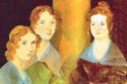

Charlotte Brontë (1816 – 1855)
Emily Jane Brontë (1818 – 1848)
Anne Brontë (1820 – 1849)

Bir Çehov oyunundan fırlamışçasına hayatlar süren, her biri bir yandan dönemin İngiltere'sinde yaşamanın, bir yandan da kadın sanatçı olmanın zorluklarıyla boğuşan "Üç Kız Kardeş"... Edebiyat tarihi şahidimizdir ki sadece yüz yıl sonra doğmuş olsalardı Brontë Kardeşler, sanat dünyasının ve popüler kültürün kendi aralarında paylaşamayacağı üç sanatçı olurdu.
Üç kız kardeşten en büyüğü Charlotte Brontë (okunuşu: Şarlıt Bronte) 21 Nisan 1816'da Yorkshire, İngiltere'de doğdu. Ailenin annesi Maria Branwell ev kadını, babası Partick Brontë ise İrlandalı bir rahipti. Charlotte ailenin altı çocuğundan üçüncüsüydü. Nisan 1820'de aile Haworth'a taşındı. Anneleri Maria 15 Eylül 1821'de kanserden ölünce, beş kız ve bir erkek çocuğa bakma görevi, teyzeleri Elizabeth Branwell'e düştü. 1824 yılında üç kız kardeşiyle birlikte Clergy Daughters adlı okula başlayan Brontë, buradaki sağlıksız koşullar nedeniyle okuldan hiç hoşlanmadı. Yazarın sağlığı burada bozuldu, hatta ablaları 1814 doğumlu Maria'yı ve 1815 doğumlu Elizabeth'i de okuldaki koşullar yüzünden 1825'te vereme kurban verdi. Bir yıl sonra okuldan ayrıldı.
Sağ kalan dört kardeş; Charlotte, Branwell (erkek), Emily ve Anne babalarının kütüphanesinde bolca vakit geçirmeye başladılar. "Gondal" adını verdikleri hayali bir krallık kuruyorlar ve bu krallıkla ilgili öyküler ve şiirler yazıyorlardı. Edebiyata karşı ilgileri de bu yıllarda başladı, hayal güçleri kardeşlerin tümüne ileride geliştirecekleri yetenekler sundu.
Emily, eğitimine Mirfield'daki Roe Head adlı okulda devam etti. 1831 ve 1832 yıllarında burada okudu ve bu okul, en iyi arkadaşları Ellen Nussey ve Mary Taylor ile tanıştığı yer oldu. Eğitimini tamamladıktan sonra bu okula öğretmen olarak döndü ve 1835-1838 yılları arasında burada öğretmenlik yaptı.
1839'da Yorkshire'daki çeşitli ailelerin evinde çocuk bakıcılığına başladı ve 1841'e kadar bu işle uğraştı. 1842'de kardeşi Emily ile Brüksel'e, Constantin Heger ve karısı tarafından işletilen bir okulda Almanca ve işletme dersleri almaya, bir yandan da çalışmaya gitti. Önceleri öğrenci olarak katıldıkları okulda daha sonra Charlotte İngilizce, Emily de müzik öğretmenliği yapmaya başladı. Ancak Brüksel'de yeni kurdukları bu hayat, teyzeleri Elizabeth'in ölümüyle yarıda kesildi. Bu yüzden 1842'de İngiltere'ye döndüler ancak Charlotte 1843'te tekrar Brüksel'e gitmeye karar verdi. Brüksel'deki serüveninin ikinci yarısı pek de iyi geçmedi. Yalnız kalmıştı, evine ve kardeşlerine karşı büyük bir özlem duyuyordu ve okulun sahibi Constantin Heger'e âşık olmuştu. Burada geçirdiği günleri, kitapları "The Professor" ve "Villette"e esin kaynağı oldu. Charlotte Ocak 1844'te İngiltere'ye geri döndü.
Kardeşlerin sanattaki yeteneğinin ortaya çıkması sonucu Charlotte, Emily Jane ve Anne 1846'da ortak bir şiir kitabı yayımlamışlar ve eseri, dönemin kadın yazarlara karşı önyargılı tavrından sıyrılabilmek amacıyla hem erkek hem de kadın ismi olarak kullanılan mahlaslarla basmışlardır. Kullandıkları mahlaslar gerçek isimlerinin baş harfleriyle aynı baş harfe sahipti: Charlotte için "Currer Bell", Emily icin "Ellis Bell" ve Anne için "Acton Bell" adları kullanılmıştı. Kız kardeşleriyle birlikte yayımladığı ilk şiir kitabının ilgi görmemesine rağmen Charlotte Brontë, ilk iki romanında "Currer Bell" ismini kullanmaya devam etti.
Brontë'nin yayımlanan romanları şöyledir: Jane Eyre (1847), Shirley (1849), Villette (1853), Öğretmen (1857)
Öğretmen kitabı Jane Eyre'den daha önce yazılmış, ancak hiçbir yayınevi tarafından basılmak istenmemişti. Roman Brontë'nin ölümünden sonra, 1857'de basıldı.
Ailenin tek oğlu olan Branwell, 1848'de bronşit yüzünden öldü. Aynı yıl Emily Brontë ve 1849'da Anne Brontë veremden hayatını kaybetti. Charlotte Brontë, babasıyla yalnız kalmıştı. Jane Eyre'in gördüğü büyük ilgi üzerine bir yayıncı, yazarı sık sık Londra'ya davet ediyordu. Bu ziyaretler sırasında Brontë geniş bir sosyal çevre edindi; Harriet Martineau, Elizabeth Gaskell gibi isimlerle tanıştı. Ancak yaşlı babasının yanında olmak istediğinden Londra seyahatlerini birkaç haftadan uzun tutmadı.
Haziran 1854'te Charlotte, babasının kâhyası Arthur Bell Nicholls'la evlendi ama hamileliğinin dokuzuncu ayında, 31 Mart 1855'te öldü. Ölüm nedeni tam olarak bilinmese de verem, tifüs ya da hamileliğindeki bir rahatsızlıktan dolayı öldüğü sanılmaktadır. Charlotte Brontë'nin romanları bugün halen büyük ilgi görmekte ve İngiliz Edebiyatı'nın klasikleri arasında sayılmaktadır. Yazarın aynı zamanda Anne'in Ölümü Üzerine ve Brontë isimli iki şiir kitabı bulunmaktadır.
JANE EYRE (Can Yayınları, 2012)
***
Emily Jane Brontë'nin (okunuşu: Emili Ceyn Bronte) kaleme almış olduğu tek roman Uğultulu Tepeler (1847), bugün İngiliz edebiyatının en önemli yapıtlarından biri olarak anılmaktadır.
Emily 1818 yılında Thornton, Yorkshire'da doğdu. Çocukluğunda kaleme aldığı çalışmalarından çok azı bugüne ulaşabilmiştir. 1838'de Halifax yakınlarındaki Bayan Patchett'in Kızlar Akademisi'nde çalıştı. Daha sonra kardeşi Charlotte ile birlikte Brüksel'deki özel bir okula devam etti.
Kardeşlerin ortak yayımladığı "Currer, Elise ve Acton Bell'den Şiirler" adlı kitap sadece iki adet satarak büyük bir hayal kırıklığı yaratsa da Brontë Kardeşler yılmadı ve ilk romanlarını yazmak için kolları sıvadı.
Emily 1847'de tek romanı olan Uğultulu Tepeler'i yayımladı. Bu roman üç ciltlik bir setin ilk iki cildini oluşturmaktaydı. Son cilt, kız kardeşi Anne tarafından yazılan Agnes Grey isimli romandır. Romanın yenilikçi yapısı, eleştirmenleri şaşırtmıştır. Her ne kadar ilk çıktığında hem iyi hem kötü yorumlar alsa da roman, zamanla bir İngiliz edebiyatı klasiği haline gelmiştir. 1850'de Charlotte, romanı yayına hazırlayıp düzenlemiş ve Emily'nin gerçek adıyla, tek başına bir eser olarak, Uğultulu Tepeler adıyla yayımlamıştır.
Kız kardeşleri gibi Emily'nin sağlığı da evdeki ve okuldaki zor şartlar sebebiyle zayıflamış, kötüleşmişti. Erkek kardeşi Branwell'in cenazesi sırasında soğuk algınlığı kaptı ve her türlü tıbbi müdahaleye rağmen 19 Aralık 1848'de veremden öldü; West Yorkshire'ın Haworth kentinde gömülmüştür.
UĞULTULU TEPELER (Bordo Siyah Yayınları, 2010)
***
Brontë Kardeşler'in en küçüğü Anne Brontë (okunuşu: En Bronte) 17 Ocak 1820'de Yorkshire'ın Thornton kentinde dünyaya geldi. 15 yaşındayken Roe Head Mirfield'daki Bayan Wooler'ın okuluna başladı, ancak 1837'de oradan ayrıldı.
1839-40 yıllarında Mirfield'da Ingham ailesinin kahyası olarak çalıştı ve 1840-45 yılları arasındaki beş yıl boyunca da Thorp Green York'taki Robinson ailesinin yanında çalışarak yazları onlarla birlikte bir sahil kenti olan Scarborough'da geçirdi.
Üç kız kardeşin ortaklaşa çıkardıkları kitapta Anne'in yirmi bir tane şiiri yer almıştı. Temmuz 1847'de "Thomas Cautley Newby" yayınevi Anne'in Agnes Grey adlı romanını yayımlamayı kabul etti. Temmuz 1848'de de Anne, Willfield Hall'un Kiracısı adlı romanını tamamladı. Ocak 1849'da Anne'e de abisi ve ablaları gibi verem tanısı kondu. Mayıs 1849'da deniz havasının ona iyi geleceği düşüncesiyle ablası Charlotte'la birlikte Scarborough'ya gittilerse de Anne, 28 Mayıs 1849 günü öldü. Henüz yirmi dokuz yaşında olan Anne, Castle Hill'deki Azize Mary Kilisesi'nin mezarlığına gömüldü.
AGNES GREY (Turkuvaz Yayıncılık, 2007)